Si es tu primer día, lee todo desde el principio. Si ya trabajaste antes con el sistema, busca aquí lo que necesites.
Cuando veas algo así: Aceptar, es un botón que existe en la pantalla, escrito igual que como lo vas a ver.
Cuando veas algo así: 04121234567, es un texto que tú tienes que escribir.
Antes, los pedidos se anotaban en papel. Alguien atendía el teléfono, escribía en una libreta, le pasaba el papelito a la cocina y esperaba que no se perdiera.
Ahora ese papel es una pantalla. El pedido entra al sistema, aparece de una vez en la computadora de la cocina, y el sistema se encarga solo de escribirle al cliente por WhatsApp en cada paso.
Tu trabajo es mover cada pedido de izquierda a derecha en la pantalla, a medida que va avanzando. Nada más. Todo lo demás lo hace el sistema solo.
Estas son las palabras que usa este manual. No hace falta que te las aprendas de memoria: vuelve a esta página cada vez que veas una que no recuerdes.
| Palabra | Qué quiere decir |
|---|---|
| Navegador | El programa con el que se ve internet. En esta computadora es Google Chrome: el círculo de colores (rojo, amarillo, verde y azul). Se abre con doble clic. |
| Barra de direcciones | La franja blanca y larga que está arriba del todo en el navegador. Ahí se escribe a dónde quieres ir. No es un buscador: si escribes la dirección exacta, te lleva directo. |
| Pestaña | Cada "hoja" abierta dentro del navegador, arriba del todo. Puedes tener varias abiertas a la vez y saltar entre ellas con un clic. |
| Hacer clic | Apretar una sola vez el botón izquierdo del mouse, encima de algo. Dentro del sistema, casi todo se hace con un solo clic. |
| Botón | Un recuadro de color con letras adentro. Al pasarle el mouse por encima, la flechita se convierte en una manito: eso significa que se le puede hacer clic. |
| Campo | Un recuadro vacío donde tú escribes algo (un nombre, un teléfono, un precio). Primero le haces clic adentro, después escribes. |
| Lista desplegable | Un campo con una flechita hacia abajo. Al hacerle clic se abre una lista de opciones y eliges una. No se escribe: se elige. |
| Ventana emergente | Un recuadro que aparece encima de la pantalla y la oscurece por detrás. Hasta que no la cierres o la confirmes, no puedes tocar nada más. En este manual la llamamos "ventanita". |
| Recargar | Pedirle a la pantalla que se vuelva a cargar desde cero. Se hace con la tecla F5, o con el botón de la flecha en círculo. Es la solución mágica cuando algo se ve raro. |
| Pedido | Todo lo que pidió un cliente, junto. Un pedido puede tener muchos platos adentro. |
| Tablero | La pantalla principal, donde se ven todos los pedidos del día repartidos en cuatro columnas. |
El botón izquierdo del mouse sirve para todo lo de este manual. El botón derecho abre menús que no necesitas y que pueden confundirte. Si se te abre uno sin querer, aprieta la tecla Esc (arriba a la izquierda del teclado) y se cierra.
Abre Google Chrome. Es el ícono redondo de colores en el escritorio. Hazle doble clic (dos clics rápidos, uno detrás del otro).
Haz clic en la barra de direcciones, la franja blanca larga de arriba. Todo lo que había escrito ahí se pone azul: eso está bien, significa que lo que escribas ahora va a reemplazarlo.
Escribe la dirección de la pantalla que necesitas (mira la tabla de abajo) y aprieta la tecla Enter.
Espera unos segundos. La pantalla puede tardar un momento en aparecer completa. Es normal.
| Para qué | Qué escribir |
|---|---|
| El tablero de pedidos Es la que vas a usar casi siempre |
tokio-sushi-app.vercel.app |
| El panel de administración Solo para encargados |
tokio-sushi-app.vercel.app/admin.html |
| Las estadísticas Ventas, clientes, platos más vendidos |
tokio-sushi-app.vercel.app/estadisticas.html |
| El menú del cliente Para ver lo mismo que ve la gente |
tokio-sushi-app.vercel.app/menu.html |
La primera vez que abras el tablero, aprieta al mismo tiempo las teclas Ctrl y D. Aparece una ventanita: hazle clic a Listo. Eso guarda la dirección como marcador, y desde ahí en adelante la abres con un clic en la barra de abajo del navegador, sin escribir nada.
Si escribes "tokio sushi" en un buscador, te van a salir mil páginas que no son esta. Escribe la dirección completa, tal cual está en la tabla, o usa el marcador que guardaste.
El sistema no es una sola pantalla, son varias. Cada una sirve para una cosa distinta:
| Pantalla | Para qué sirve | ¿Quién la usa? |
|---|---|---|
| Tablero | Ver los pedidos que van entrando y moverlos hasta que se despachan | Todo el personal, todo el día |
| Registrar Pedido (la "caja") |
Escribir un pedido que llegó por teléfono o que se hizo en el local | Quien atiende el teléfono |
| Administración | Cambiar precios, marcar algo agotado, crear platos y combos | Solo el encargado |
| Estadísticas | Ver cuánto se vendió, qué se vende más, buscar un cliente | Solo el encargado |
| Menú del cliente | Es la página que ve la gente desde su celular para pedir | Los clientes (tú solo la miras) |
El tablero y la caja están conectados: desde el tablero hay un botón que te lleva a la caja, y cuando terminas de registrar el pedido, vuelves solo al tablero. No hace falta que escribas ninguna dirección para pasar de una a otra.
Cuando abras el tablero, lo primero que vas a ver es esta pantalla oscura, con un sushi arriba y dos recuadros para llenar:
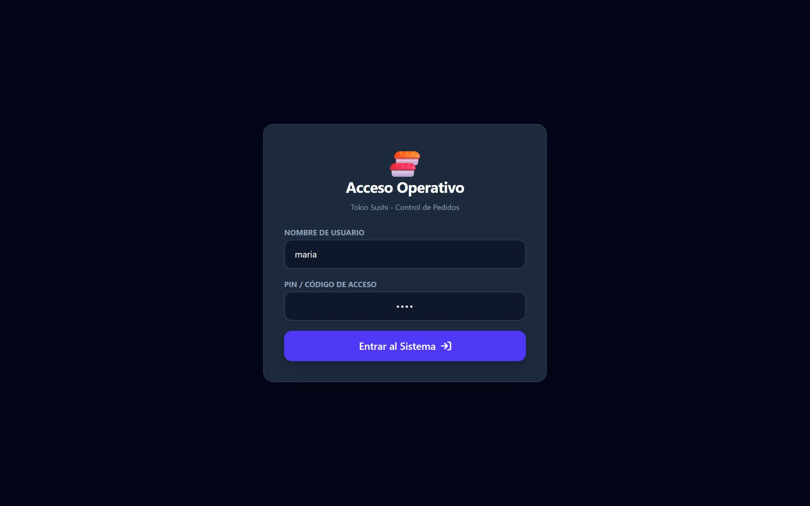
Haz clic dentro del primer recuadro. Va a aparecer una rayita parpadeando: eso quiere decir que ya puedes escribir.
Escribe tu nombre de usuario.
Aprieta la tecla Tab (arriba de Bloq Mayús) para saltar al recuadro de abajo, o hazle clic directamente.
Escribe tu PIN. Vas a ver puntitos en vez de números.
Aprieta Enter. Si todo está bien, aparece el tablero con los pedidos del día.
No se lo prestes a nadie, ni siquiera "un momentito". El sistema deja anotado tu nombre en cada pedido que se toca. Si alguien usa tu PIN y se equivoca, va a figurar que fuiste tú.
| Lo que pasa | Qué hacer |
|---|---|
| Dice que el usuario o el PIN están mal | Fíjate en tres cosas: que no tengas activado Bloq Mayús (una lucecita en el teclado), que no hayas dejado un espacio de más al final, y que estés escribiendo tu usuario y no tu nombre completo. |
| No pasa absolutamente nada al apretar Enter | Puede que falte llenar uno de los dos recuadros. Revisa que los dos tengan algo escrito. |
| Dice que hay demasiados intentos | El sistema bloquea por un rato a quien se equivoca muchas veces seguidas, para protegerte. Espera unos minutos y vuelve a intentar, sin insistir. |
| La pantalla se queda en blanco o cargando | Aprieta F5 para recargar. Si sigue igual, revisa que la computadora tenga internet. |
| Olvidaste tu PIN | Solo el encargado puede cambiarlo, desde el panel de administración. No hay forma de recuperarlo tú solo. |
Cuando termines tu turno, cierra tu sesión. Así el próximo que llegue entra con su propio usuario y cada cosa queda anotada a nombre de quien la hizo.
Busca arriba a la derecha del todo el botón rojo con el símbolo de encendido (un círculo con una rayita arriba).
Hazle clic. Vuelves a la pantalla de entrada.
Si solo cierras la ventana de Chrome, tu sesión sigue abierta: el próximo que entre va a estar usando tu usuario sin saberlo. Usa siempre el botón rojo.
Al lado de tu nombre, arriba, aparece una etiqueta con tu tipo de usuario (en la foto del tablero de la página siguiente dice SUPERADMIN). Eso decide qué puedes hacer y qué no:
| Etiqueta | Qué puede hacer |
|---|---|
| cajero | Todo lo del día a día: tomar pedidos, cobrar, mandar a cocina, despachar. No puede cambiar la tasa del dólar ni agregar líneas de precio libre. |
| admin | Todo lo anterior, más cambiar la tasa del día y entrar al panel de administración. |
| superadmin | Todo, incluyendo crear y borrar usuarios. |
No está dañado: es que tu tipo de usuario no tiene permiso para eso. Pídeselo al encargado.
Así se ve el tablero con pedidos dentro. Los números rojos no existen en la pantalla: los pusimos nosotros para explicarte cada parte.
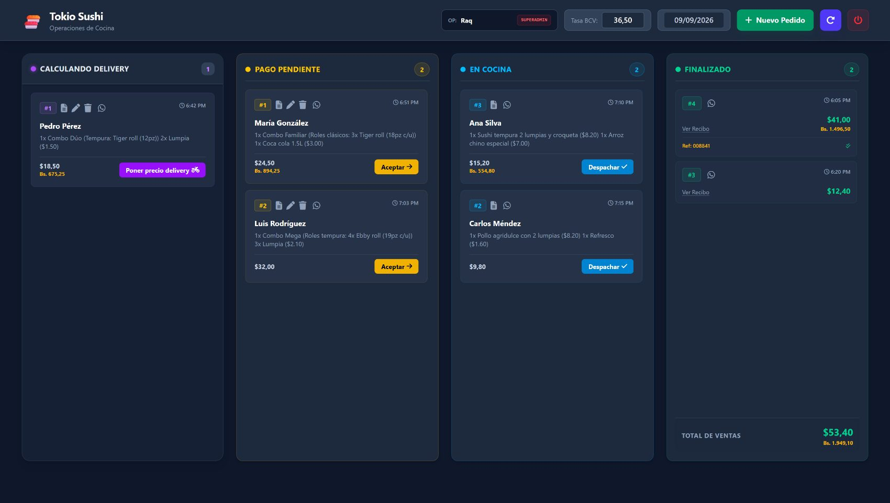
1 2 3 4 5Ese círculo con un número te dice cuántos pedidos hay en esa columna en este momento. Es la forma más rápida de ver si te estás quedando atrás.
Un pedido siempre va de izquierda a derecha. Nunca al revés. Cada vez que le haces clic al botón de una tarjeta, el pedido salta a la columna siguiente.
| Columna | Qué significa | Qué tienes que hacer |
|---|---|---|
| Calculando Delivery | Llegó un pedido a domicilio. Todavía no sabemos cuánto va a costar llevarlo, así que el total está incompleto. | Mirar la dirección, decidir el precio del envío y hacer clic en Poner precio delivery |
| Pago Pendiente | El pedido ya tiene su precio final. Estamos esperando que el cliente pague y mande el comprobante. | Cuando el pago llegue, hacer clic en Aceptar → |
| En Cocina | El pago está confirmado y la cocina está preparando la comida. | Cuando la comida esté lista y salga, hacer clic en Despachar ✓ |
| Finalizado | El pedido ya salió del local. Aquí solo se acumula, para llevar la cuenta del día. | Nada. Solo mirar. |
El Aceptar → es amarillo y el Despachar ✓ es azul. Son dos pasos muy distintos: uno confirma que pagaron, el otro avisa que la comida ya salió. Guíate por el color y por la columna en la que está la tarjeta.
Si el cliente va a buscar su comida al local, no hay delivery que calcular. Ese pedido entra directo a Pago Pendiente. Es normal que la primera columna esté vacía muchas veces.
Cada pedido es una tarjeta. Todas tienen lo mismo:
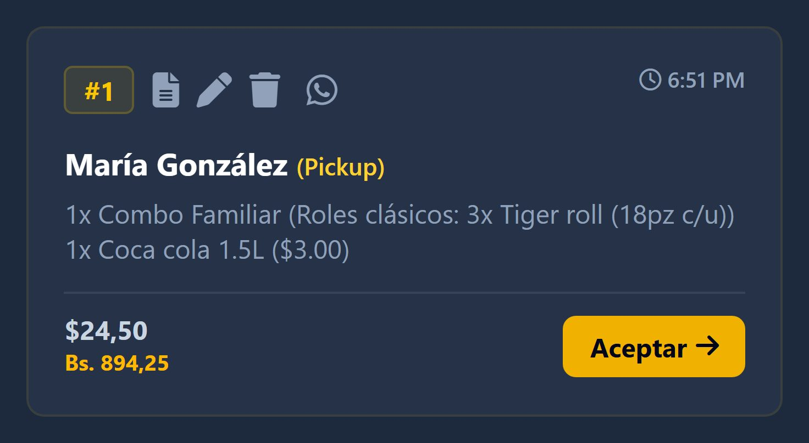
| Icono | Nombre | Para qué |
|---|---|---|
| 📄 | Ver Detalles | Una hoja de papel. Abre una ventanita con todo el pedido: cada plato, la dirección, el teléfono y el comprobante de pago. Es el que más vas a usar. |
| ✏️ | Editar Pedido | Un lápiz. Sirve para agregar o quitar platos si el cliente cambia de idea. |
| 🗑️ | Cancelar Pedido | Una papelera. Anula el pedido. Ojo con este. |
| 💬 | Un globito de chat. Abre el chat de WhatsApp con ese cliente, para escribirle tú a mano. |
Ponle el mouse encima sin hacer clic y espera un segundo: aparece un cartelito con su nombre. Funciona con casi todos los botones del sistema.
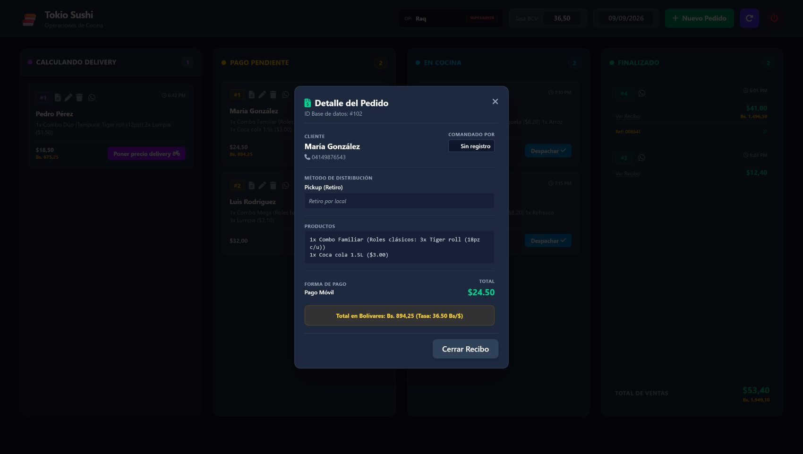
Ahí está todo lo que necesitas saber de un pedido: el cliente y su teléfono, si es Delivery o Pickup, la dirección, la lista completa de productos, la forma de pago, el total y el mismo total en bolívares con la tasa que se usó.
Antes de poner el precio del delivery, para leer la dirección. Antes de aceptar el pago, para confirmar el monto. Antes de despachar, para revisar que la cocina no se saltó una nota. Es un clic y evita casi todos los errores.
| Qué es | Para qué sirve |
|---|---|
| Op: tu nombre + etiqueta | Te recuerda con qué usuario estás trabajando. Si dice un nombre que no es el tuyo, cierra sesión y vuelve a entrar con el tuyo. |
| Tasa BCV | El valor del dólar de hoy. Con esto el sistema calcula los bolívares de cada pedido. Los cajeros lo ven pero no lo pueden cambiar. |
| La fecha | Te muestra los pedidos de ese día. Al hacerle clic se abre un calendario para mirar días anteriores. Acuérdate de volverla al día de hoy, o vas a pensar que no está entrando ningún pedido. |
| + Nuevo Pedido | Te lleva a la caja, para escribir un pedido que llegó por teléfono. Se explica en la Parte 5. |
| ⟳ (botón morado con una flecha en círculo) | Vuelve a pedir la lista de pedidos. Normalmente no hace falta: los pedidos aparecen solos. Úsalo si tienes dudas de que la pantalla esté al día. |
| ⏻ (botón rojo del final) | Cerrar sesión. |
Cada pedido guarda la tasa que había en el momento en que se creó. Si el encargado la corrige a mitad del día, los pedidos viejos no cambian (eso está bien: se cobraron a la tasa de antes). Por eso conviene ponerla correcta apenas se abre el local.
No tienes que estar recargando la pantalla ni apretando nada. Cuando un cliente manda un pedido desde su celular, la tarjeta aparece sola en el tablero, en cuestión de segundos.
Lo mismo pasa al revés: si tu compañero mueve un pedido desde otra computadora, tú lo ves moverse en la tuya.
Como todos ven lo mismo al mismo tiempo, si dos personas le hacen clic al mismo pedido, se pueden mandar dos mensajes de WhatsApp repetidos al cliente. Pónganse de acuerdo en quién mueve el tablero.
Tú nunca escribes un WhatsApp a mano para avisar del pedido. Cada vez que mueves una tarjeta, el mensaje sale solo, con el texto correcto y el número de pedido correcto. Tu único trabajo es mover la tarjeta en el momento justo.
Solo para pedidos a domicilio. Los de retiro se saltan este paso.
En la columna morada Calculando Delivery aparece la tarjeta. Primero hazle clic al iconito de la hoja de papel 📄 para leer la dirección.
Cierra esa ventanita y haz clic en el botón morado Poner precio delivery
Se abre esta ventanita:
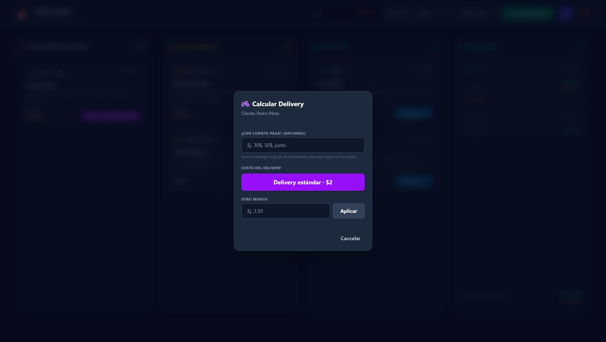
Si el cliente paga en efectivo, arriba te pregunta "¿Con cuánto paga?". Escribe ahí el billete que te dijo el cliente: 30$, 50$, justo. Eso le llega al motorizado para que salga con el vuelto. Si paga por Pago Móvil, esta pregunta no aparece.
Ahora el precio del envío. Tienes dos caminos:
La tarjeta se mueve sola a Pago Pendiente, ya con el delivery sumado al total, y al cliente le llega el WhatsApp con lo que tiene que pagar.
Una vez que el pedido pasa a Pago Pendiente, ya no hay botón para volver a cambiar el envío. Si te equivocaste, tienes que arreglarlo con Editar Pedido (Parte 6).
Tres dólares con cincuenta se escribe 3.50, con punto, no con coma.
El cliente te manda el comprobante por WhatsApp. Cuando lo tengas y lo hayas verificado, es hora de aceptar el pedido.
Que el cliente mande una foto no significa que el dinero llegó. Revisa la cuenta antes de hacer clic en Aceptar. Después de este paso, la cocina empieza a cocinar.
En la columna amarilla Pago Pendiente, busca la tarjeta y haz clic en el botón amarillo Aceptar →
Se abre la ventanita del comprobante:
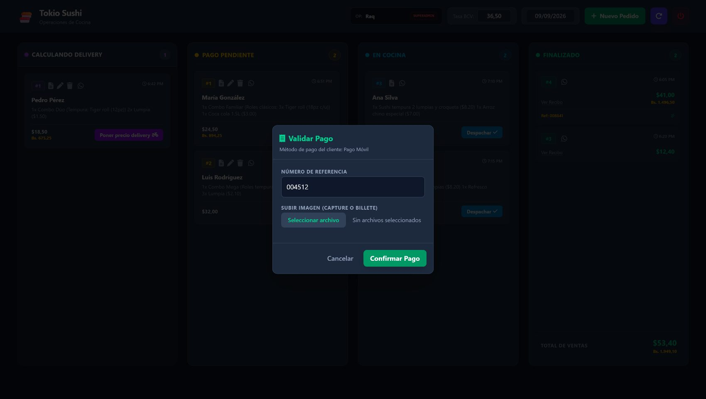
Escribe el Número de Referencia:
Sube la foto del comprobante (opcional, pero muy recomendable). Haz clic en Seleccionar archivo, busca la imagen que guardaste del WhatsApp y hazle doble clic. Vas a ver la foto pequeñita debajo: eso confirma que se cargó.
Haz clic en Confirmar Pago.
Aparece otra ventanita, preguntando en cuánto tiempo estará listo:
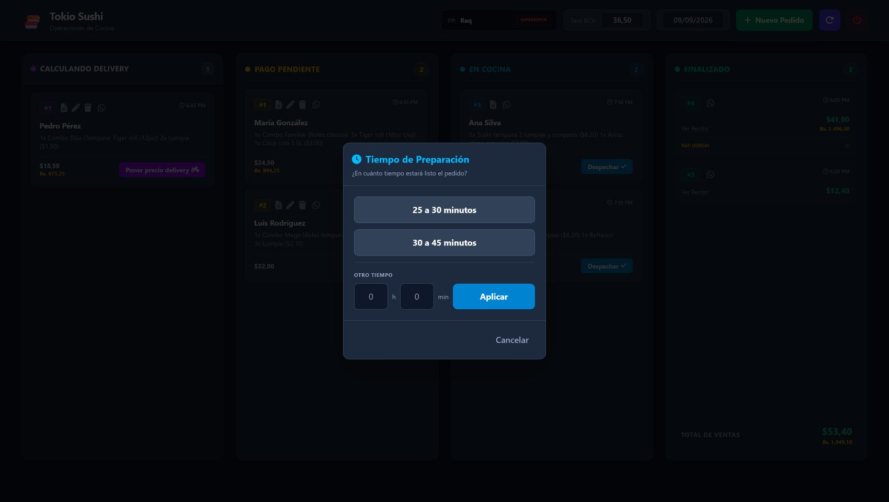
Elige una de las tres opciones:
La tarjeta se va a En Cocina, y al cliente le llega el WhatsApp diciéndole que su pago fue aprobado y en cuánto tiempo estará listo.
Ese tiempo es una promesa que le llega al cliente por escrito. Si dices 25 minutos y tardan una hora, el cliente va a llamar molesto. Cuando dudes, elige el rango más largo.
La comida está lista y empacada, y el motorizado está por salir (o el cliente ya llegó a buscarla).
En la columna azul En Cocina, haz clic en el botón azul Despachar ✓
Listo. La tarjeta se va a Finalizado y el total del día sube.
En ese mismo momento el sistema manda dos mensajes sin que tú hagas nada:
Apenas hagas clic en Despachar, al cliente le llega "tu pedido va en camino". Si la comida todavía está en la cocina, el cliente va a estar mirando la puerta veinte minutos. Haz clic cuando la comida sale de verdad.
| Pedido con DELIVERY | Pedido para RETIRAR (Pickup) |
|---|---|
| 1. Entra en Calculando Delivery | 1. Entra directo en Pago Pendiente |
| 2. Miras la dirección y pones el precio del envío | 2. (este paso no existe) |
| 3. Pasa a Pago Pendiente. Le llega al cliente cuánto pagar | 3. Al cliente ya le llegó cuánto pagar |
| 4. Verificas el pago → Aceptar → → eliges el tiempo | 4. Verificas el pago → Aceptar → → eliges el tiempo |
| 5. La comida sale → Despachar ✓ | 5. El cliente llega → Despachar ✓ |
| 6. Sale el aviso al grupo de motorizados | 6. (no hay aviso al grupo) |
Hay algo que confunde a todo el mundo el primer día, así que léelo con calma:
Cada mañana, los dos contadores empiezan otra vez en 1. Hay una lista para los delivery y otra para los que se retiran.
Por eso puede haber dos pedidos #1 en el mismo día: el delivery número 1 y el retiro número 1. Si miras la foto del tablero de la Parte 3, vas a ver justamente eso. No es un error del sistema, es a propósito, y es como el restaurante lleva la cuenta desde siempre.
Para diferenciarlos, mira siempre el nombre del cliente, no solo el número.
A veces alguien hace un pedido y desaparece. Esa tarjeta se va a quedar en Pago Pendiente para siempre si nadie hace nada.
Escríbele por WhatsApp con el iconito 💬 de la tarjeta.
Si no responde en un rato razonable, cancélalo con el iconito de la papelera 🗑️ para que no ensucie el tablero.
Revisa que no quede ninguna tarjeta en las tres primeras columnas. Si queda alguna, o se despacha o se cancela. Un tablero limpio al cerrar es un tablero limpio al abrir.
Desde el tablero, haz clic en el botón verde de arriba: + Nuevo Pedido
Se abre una pantalla clara, parecida al menú que ven los clientes pero ordenada para trabajar rápido en computadora. Para volver al tablero en cualquier momento, arriba a la derecha está el botón ▦ Tablero, y arriba a la izquierda la flecha ←.
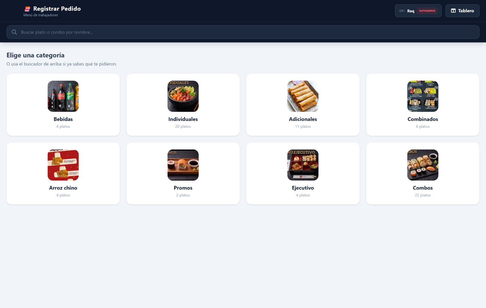
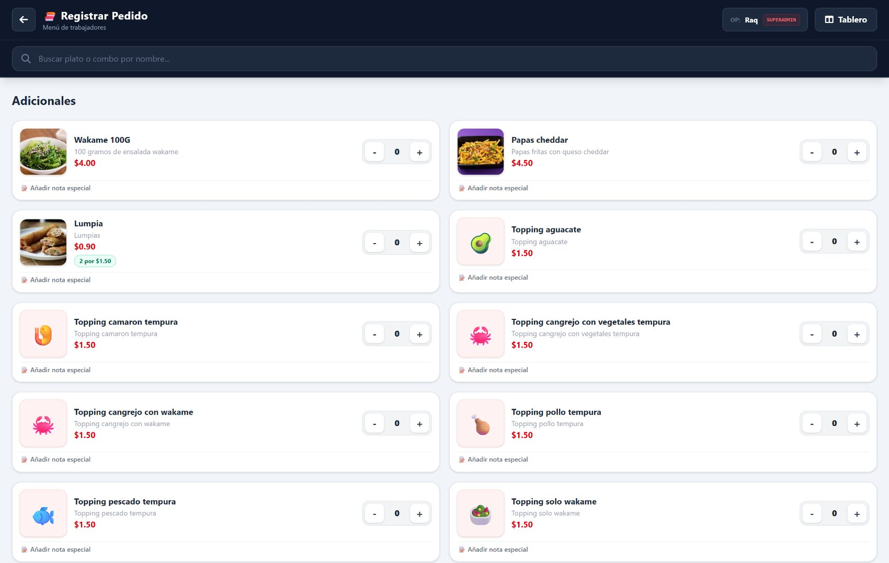
1 2 3 4 5 6Busca el plato. Escribe en el buscador de arriba parte del nombre. No hace falta escribirlo completo ni con acentos: si escribes cali ya aparece el California roll.
Si el cliente no sabe qué quiere, sal del buscador y entra por las categorías a mirar con él.
Súbele la cantidad con el botón +. Cada vez que tocas +, la barra verde de abajo sube sola.
Si el cliente pide algo especial para ese plato, haz clic en Añadir nota especial y escríbelo.
Repite con cada plato que pida el cliente.
Cuando ya esté todo, haz clic en la barra verde de abajo: Continuar al cierre 🛒
Con el cliente todavía en el teléfono, léele lo que tienes anotado y el total. Corregir ahora toma cinco segundos; corregir después, cuando la cocina ya empezó, es un problema.
Algunos combos dejan que el cliente elija qué rolls quiere. Cuando agregas uno de esos, no se suma directo: aparece un botón que dice 🎨 Personalizar. Al tocarlo se abre esta ventana:
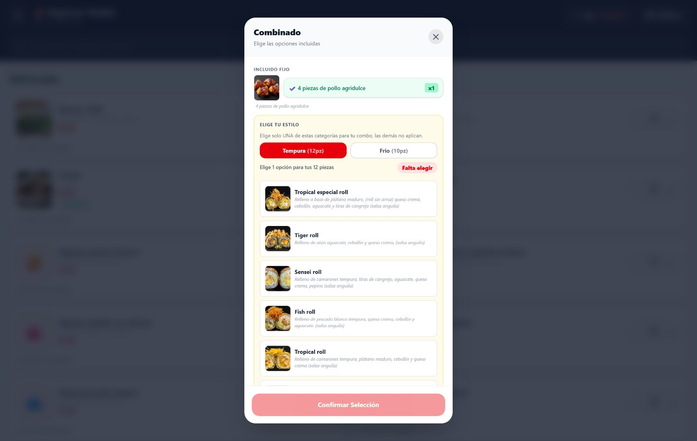
Si el combo tiene estilos (por ejemplo "Tempura (12pz)" o "Frío (10pz)"), primero elige uno tocando su botón. Es uno o el otro, no los dos: al cambiar de estilo se borra lo que hayas elegido.
Debajo dice exactamente qué tienes que hacer, por ejemplo: "Elige 1 opción para tus 12 piezas" o "Elige 3 opciones (18 piezas cada opción)".
Toca el roll que quiere el cliente. Se pone verde con un ✓. No hay que escribir números ni repartir piezas: un toque = un roll.
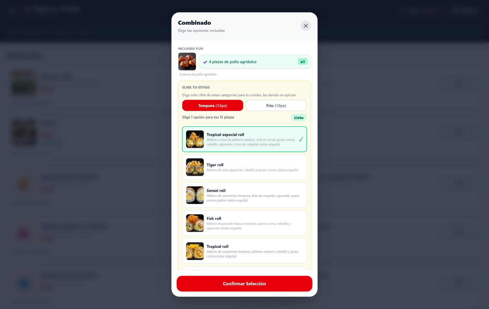
Cuando estén todos, el botón de abajo se enciende. Haz clic en Confirmar Selección.
Es porque todavía falta elegir. Mira la etiqueta de la derecha: dice 1 / 3 o Falta elegir. Cuando esté completo se pone verde y el botón se enciende.
Si intentas cerrar el pedido con un combo a medias, sale un aviso que dice "⚠️ Te faltan combos por personalizar" y no te deja seguir. Termina de elegir los rolls y vuelve a intentar.
Después de Continuar al cierre 🛒 aparece esta pantalla, dividida en dos: a la izquierda lo que pidió el cliente, a la derecha sus datos.
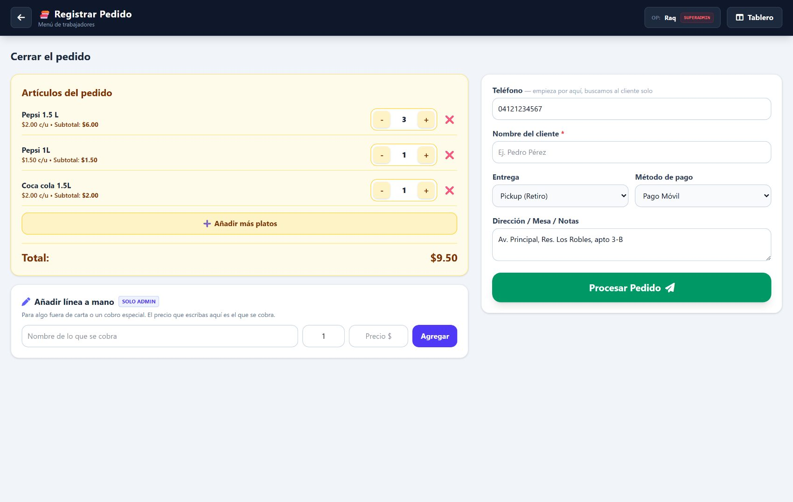
1 2 3 4 5 6 7Teléfono. Escribe el número (04121234567) y después haz clic afuera del recuadro, o aprieta la tecla Tab.
El sistema busca solo al cliente. Si ya compró antes, te llena el nombre y la dirección automáticamente y te lo avisa con un cartelito. Si es nuevo, te lo dice también.
Nombre del cliente. Si se llenó solo, déjalo. Si es nuevo, escríbelo. El asterisco rojo * quiere decir que es obligatorio.
Entrega. Elige en la lista Pickup (Retiro) si el cliente viene a buscarlo, o Delivery si hay que llevárselo.
Método de pago. Elige Pago Móvil o Efectivo / Divisas. Esto decide qué le va a llegar al cliente por WhatsApp, así que tiene que ser el correcto.
Dirección / Mesa / Notas. La dirección completa si es delivery, o el número de mesa si está en el local. Aquí también van las aclaratorias generales: tocar el timbre dos veces.
Revisa el Total una vez más y haz clic en Procesar Pedido ✈
Aparece ✅ ¡Pedido registrado!. Ya está en el tablero y el cliente recibió su WhatsApp. Ahora elige:
El sistema reconoce a la gente por su número de teléfono, no por su nombre. Si lo escribes mal, se crea un cliente nuevo y se pierde todo su historial de compras. Repítele el número al cliente antes de continuar.
Escríbelo como se usa aquí, empezando por 0: 04121234567. Solo si es de otro país se escribe con el signo + y el código, así: +5715551234.
A veces hay que cobrar algo suelto que no existe como plato. En la pantalla de cierre, abajo a la izquierda, los usuarios admin tienen el recuadro "Añadir línea a mano".
Escribe qué se está cobrando en Nombre de lo que se cobra.
Pon la cantidad y el Precio $.
Haz clic en Agregar. Aparece en la lista como un plato más.
No está dañado: solo los admin lo ven, porque el precio se escribe a mano. Pídele al encargado que lo agregue él.
Llamó otra vez y quiere agregar un roll, o quitar algo. Se arregla con el iconito del lápiz ✏️ de la tarjeta.
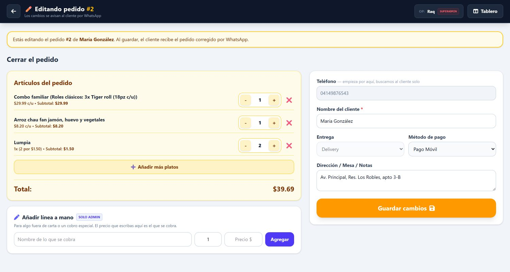
Haz clic en ✏️ en la tarjeta del pedido.
Para agregar, usa el buscador que dice Añadir Producto: escribe el nombre y haz clic en el plato que aparece en la lista.
Para quitar o cambiar cantidades, usa los botones de cada línea en Artículos en la Orden.
Mira el Total a Cobrar: cambia solo, en dólares y en bolívares.
Guarda los cambios.
Editar un pedido no manda ningún WhatsApp automático. Si le cambiaste el total, tienes que escribirle tú con el iconito 💬 y decírselo. Si no, va a pagar el monto viejo.
Si el pedido ya estaba En Cocina, la cocina no se entera del cambio por la pantalla. Ve y díselo en persona.
Haz clic en el iconito de la papelera 🗑️ de la tarjeta.
Confirma cuando te lo pregunte.
No hay botón para arrepentirse. Si cancelas el pedido equivocado, hay que escribirlo otra vez completo desde la caja.
Antes de hacer clic, lee el nombre del cliente en la tarjeta y asegúrate de que es la correcta. Es muy fácil equivocarse de tarjeta cuando hay varias parecidas, sobre todo porque la papelera está justo al lado del lápiz.
Cancelar en el sistema no le devuelve la plata. Eso se resuelve aparte, con el encargado. Avísale siempre.
Esto se pregunta en el mismo momento en que pones el precio del delivery. Es el campo "¿Con cuánto paga?" que viste en la Parte 4.
Es la causa número uno de que un motorizado tenga que devolverse al local. Diez segundos de pregunta ahorran veinte minutos de viaje.
Para cualquier cosa que no sea uno de los tres mensajes automáticos (avisar de un cambio, preguntar una dirección, decirle que se acabó un plato):
Haz clic en el iconito 💬 de la tarjeta.
Se abre WhatsApp en otra pestaña, ya con el chat de ese cliente.
Escribe normal, como cualquier mensaje.
Cuando termines, vuelve a la pestaña del tablero haciendo clic arriba, donde dice Tokio Sushi.
Haz clic en la fecha, arriba en la barra. Se abre un calendario.
Elige el día que quieres ver. El tablero se llena con los pedidos de ese día.
Vuelve la fecha al día de hoy cuando termines.
Dejar la fecha en un día viejo y creer que no está entrando ningún pedido. Si el tablero se ve vacío y raro, lo primero que tienes que mirar es la fecha.
Se abre escribiendo en la barra de direcciones: tokio-sushi-app.vercel.app/admin.html
El panel tiene su propia puerta, aparte de la del tablero. Aunque ya hayas entrado a trabajar hoy, aquí te vuelve a pedir tus datos:
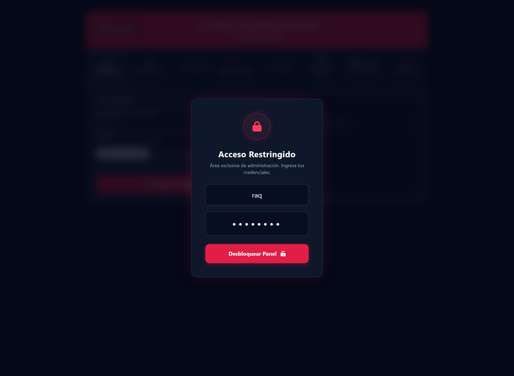
Escribe tu usuario y tu PIN, los mismos del tablero.
Haz clic en Desbloquear Panel 🔓
Es que tu usuario es cajero. Solo los admin y superadmin pueden entrar aquí. No es una falla: es lo que se quiere. Un cajero no debe poder cambiar precios.
Ya adentro, arriba hay una fila de pestañas. Cada pestaña es una sección distinta del panel, y solo se ve una a la vez:
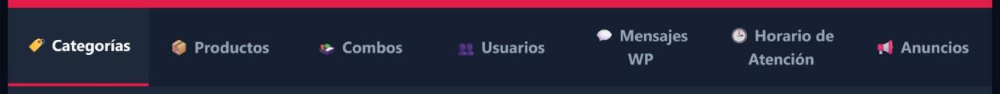
| Pestaña | Qué se hace ahí |
|---|---|
| 🏷️ Categorías | Los grupos del menú (Bebidas, Individuales, Roll clásico...) y su foto. |
| 📦 Productos | Cada plato suelto: nombre, precio, foto, si está agotado. Es la que más se usa. |
| 🍱 Combos | Los combos, y qué puede elegir el cliente dentro de cada uno. |
| 👥 Usuarios | Quién puede entrar al sistema y con qué PIN. |
| 💬 Mensajes WP | El texto de los WhatsApp automáticos. |
| 🕒 Horario de Atención | A qué hora abre y cierra el local cada día. |
| 📢 Anuncios | El cartel que le sale al cliente al abrir el menú. |
Arriba a la izquierda, en la franja roja, hay además un botón 📊 Estadísticas que se sale del panel y lleva a la pantalla de números (ventas del día, platos más vendidos). Eso es otra pantalla, no una pestaña.
Esto es lo más importante de toda la Parte 7. Casi todas las pestañas están armadas igual, así que si entiendes una, entiendes todas:
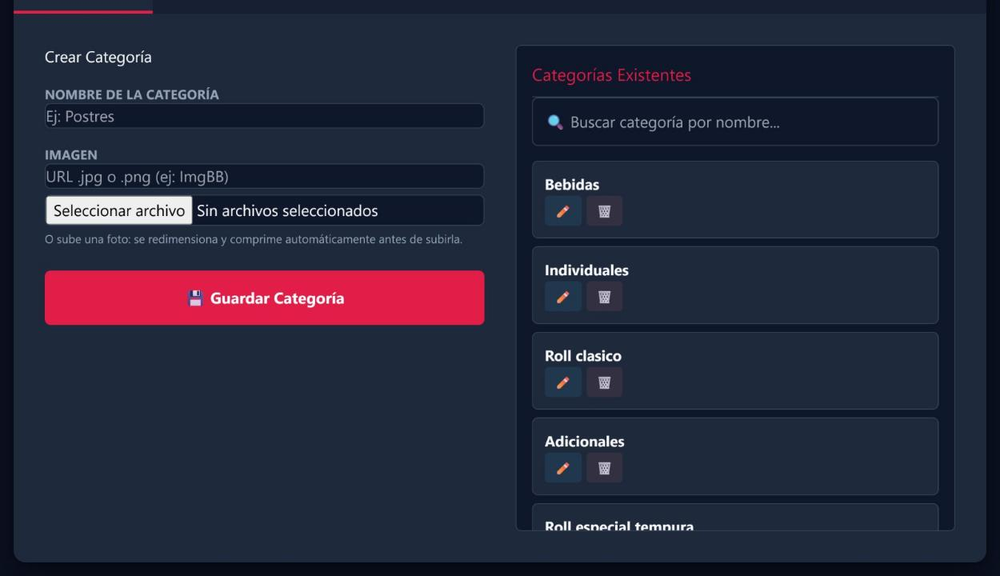
Y hay una regla que confunde a todo el mundo la primera semana:
El mismo formulario crea cosas nuevas y edita las que ya existen. No son dos pantallas distintas: es la misma, cambiada.
Cuando haces clic en el lápiz ✏️ de algo en la lista de la derecha, sus datos se meten dentro de ese formulario y el formulario pasa a "modo editar".
Para saber en cuál de los dos modos estás, mira tres cosas:
| Fíjate en | Modo CREAR | Modo EDITAR |
|---|---|---|
| El título de arriba | Crear Producto | Editar Producto |
| El botón rojo de abajo | 💾 Guardar Producto | 💾 Actualizar Producto |
| Debajo del botón rojo | (no hay nada) | Aparece ❌ Cancelar Edición |
Abres un plato con el lápiz para mirarlo, te arrepientes, y sin darte cuenta empiezas a escribir un plato nuevo encima. Al guardar no creas nada nuevo: le cambias el nombre y el precio al plato viejo.
La costumbre que te salva: antes de crear algo nuevo, mira si está el botón ❌ Cancelar Edición. Si está, haz clic en él primero. El formulario se limpia y ahí sí puedes crear tranquilo.
No hay una versión de prueba ni un "guardar borrador". Si cambias un precio, el siguiente cliente que abra el menú ya lo ve con el precio nuevo. Piensa antes de guardar.
Una categoría es un grupo del menú: Bebidas, Individuales, Roll clásico, Toppings. Es lo primero que ve el cliente al abrir el menú, y cada plato tiene que pertenecer a una.
Crear una categoría es de lo más sencillo que hay en el panel, porque solo tiene dos campos:
Nombre de la Categoría. Corto y claro: Postres. Es el texto exacto que verá el cliente.
Imagen. Tienes dos maneras (sirve igual en Productos, Combos y Anuncios):
Si subes una foto, el sistema la achica y la comprime solo antes de mandarla. No tienes que preocuparte por el tamaño. Espera a que el textito de abajo diga que terminó antes de guardar.
💾 Guardar Categoría
Para cambiarle el nombre o la foto a una categoría: búscala en la lista de la derecha, haz clic en el lápiz ✏️, cambia lo que sea, y el botón rojo (que ahora dice Actualizar) la guarda.
La papelera 🗑️ te pregunta "¿Seguro que deseas eliminar esta categoría? Esta acción no se puede deshacer." y es verdad: no hay deshacer.
Si borras una categoría, los platos que estaban dentro se quedan apuntando a un grupo que ya no existe y dejan de verse bien en el menú. Mueve los platos a otra categoría primero, o simplemente no la borres: una categoría vacía no le hace daño a nadie.
Cuando armas un combo de "elige 3 rolls", lo que marcas ahí son categorías (ver 7.6.4). Por eso vale la pena tenerlas bien separadas: Roll clásico, Roll tempura, Roll especial fríos... Si metes todos los rolls en una sola categoría, después no vas a poder armar combos que distingan entre ellos.
Un producto es cualquier cosa que se vende suelta: un roll, un refresco, una lumpia, un topping. Esta es la pestaña que vas a usar casi todos los días.
El formulario es largo, pero solo los cuatro primeros campos son obligatorios. Todo lo demás son recuadros grises opcionales que puedes ignorar por completo si no los necesitas.
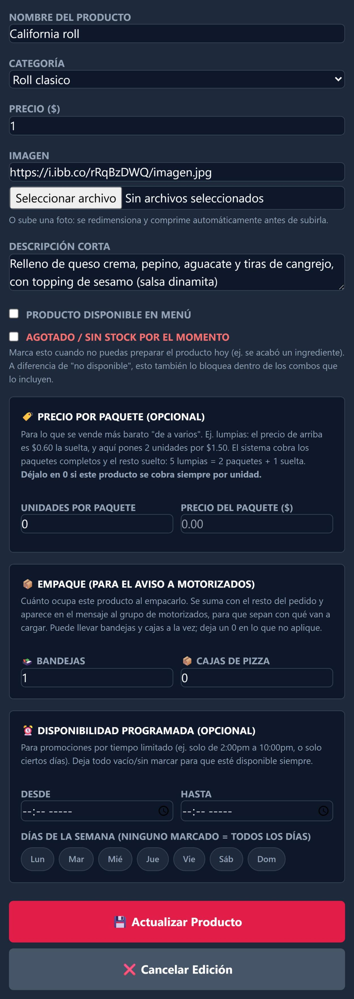
1 2 3 4 5 6 7 8 9Entra a 📦 Productos. Si aparece ❌ Cancelar Edición, haz clic en él primero.
Llena Nombre, Categoría y Precio.
Sube la foto y escribe la descripción si la tienes. Si no, se puede dejar para después.
No toques ninguno de los tres recuadros grises. Vienen bien por defecto.
💾 Guardar Producto. El plato aparece de inmediato en la lista de la derecha y en el menú del cliente.
Este es el punto donde más gente se equivoca, así que léelo despacio. Son dos casillas parecidas que hacen cosas distintas:
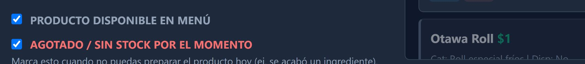
| Casilla | Qué hace |
|---|---|
| Producto Disponible en Menú (la de arriba) |
Si la desmarcas, el plato desaparece de la lista del menú,
pero se sigue pudiendo elegir dentro de un combo. Se usa para los rolls que solo existen como parte de un combo y no se venden sueltos. |
| Agotado / sin stock por el momento (la roja) |
Si la marcas, el plato desaparece de todos lados:
del menú y de los combos. Esta es la que quieres cuando se acabó algo. |
Se acabó el salmón a mitad del día. Esto es lo que haces:
Pestaña 📦 Productos.
Escribe el nombre en el buscador de la lista de la derecha.
Lápiz ✏️ del plato.
Baja hasta las dos casillas y marca la roja.
💾 Actualizar Producto.
Cuando vuelva a haber, se desmarca y reaparece. Nunca borres un plato porque se acabó: se marca agotado, que es reversible.
Pestaña 📦 Productos → busca el plato → lápiz ✏️.
Cambia el número en Precio ($). Con punto para los decimales: 8.50, nunca con coma.
💾 Actualizar Producto.
Y está bien que sea así: cada pedido guardó el precio que tenía el día que se hizo. Solo los pedidos nuevos usan el precio nuevo. Si un cliente reclama por un cobro de la semana pasada, ese pedido conserva su número original.
Sirve para lo que se vende más barato de a varios. El caso real: la lumpia suelta cuesta $0.90, pero 2 salen en $1.50.
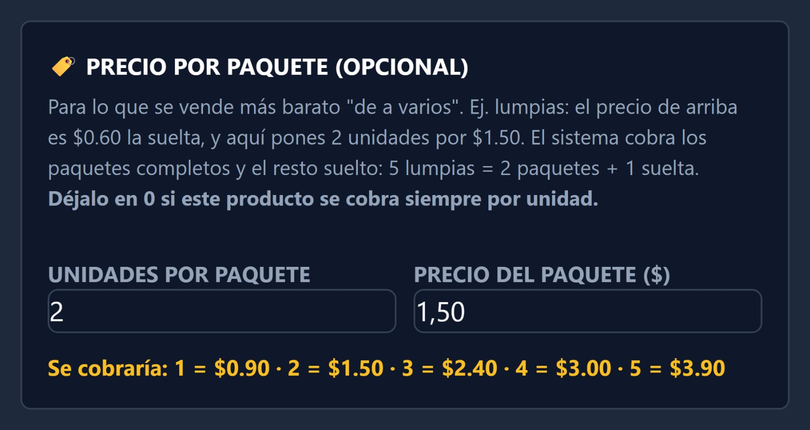
En Precio ($), más arriba en el formulario, pon el valor de una sola unidad: 0.90.
En Unidades por paquete escribe 2.
En Precio del paquete ($) escribe 1.50.
Lee la línea amarilla de abajo antes de guardar. Aparece sola apenas escribes los dos números, y te dice exactamente lo que va a pagar el cliente:
1 = $0.90 · 2 = $1.50 · 3 = $2.40 · 4 = $3.00 · 5 = $3.90
Si esos números no son los que cobra el local, algo está mal escrito. Esa línea es tu prueba.
💾 Actualizar Producto.
La cuenta que hace el sistema es: cobra todos los paquetes completos que quepan, y lo que sobre lo cobra suelto. Cinco lumpias son dos pares ($1.50 + $1.50) más una suelta ($0.90) = $3.90. El cliente no tiene que hacer nada: pide cinco y el sistema calcula. En el menú le sale además una etiqueta verde con la oferta.
Deja Unidades por paquete en 0 y el plato se cobra por unidad de toda la vida. Así están todos los platos por defecto, menos los que tú configures.
El número más chico que acepta es 2. Un "paquete de 1" no tiene sentido y el sistema lo ignora.
Nada te impide poner un paquete de 2 en $2.00 cuando la suelta vale $0.90. Al cliente le saldría más caro pedir el par que pedir dos sueltas, y el sistema igual le cobraría el par. Por eso está la línea amarilla: léela.
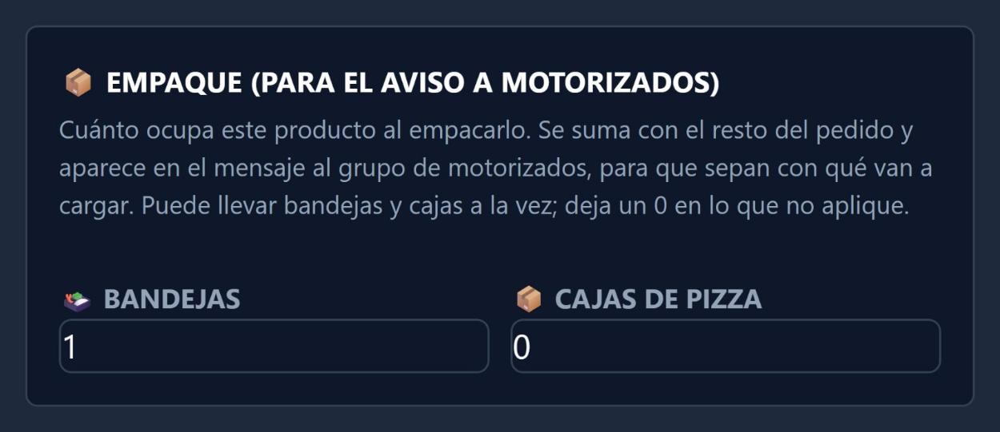
Esto no cambia el precio ni nada de lo que ve el cliente. Sirve para una sola cosa: el mensaje que se le manda al grupo de motorizados cuando se despacha un pedido incluye cuántas bandejas y cuántas cajas de pizza lleva, para que el repartidor sepa con qué va a cargar antes de llegar.
El sistema suma esto de todo el pedido junto y lo escribe en el mensaje del grupo. Si te llega el aviso diciendo "BANDEJAS: 0" cuando claramente hay comida, es que algún plato tiene aquí un cero que no debería.
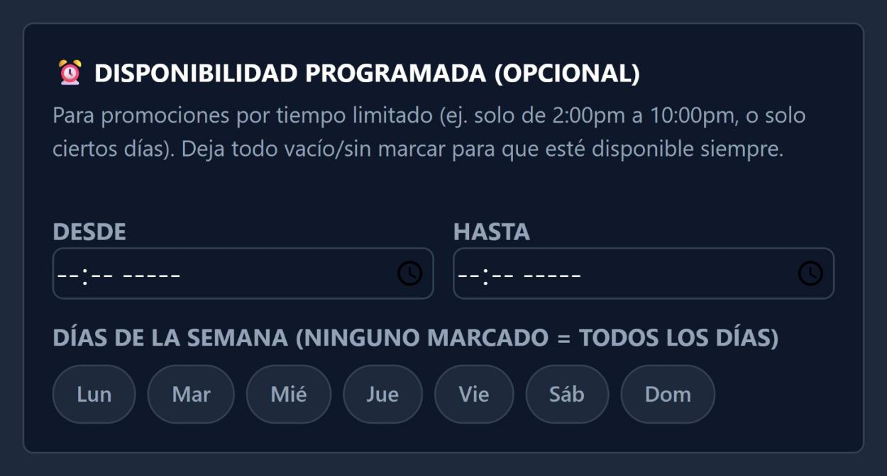
Sirve para promociones de tiempo limitado. Son dos cosas independientes:
Si no marcas ningún día, el plato está disponible todos los días, no ninguno. Es lo contrario de lo que parece, y es lo que quieres el 99% del tiempo.
Lo mismo con las horas: si las dejas vacías, el plato no tiene restricción de hora.
Fuera de la franja configurada, el plato simplemente no aparece en el menú. No hay que acordarse de apagarlo ni de encenderlo.
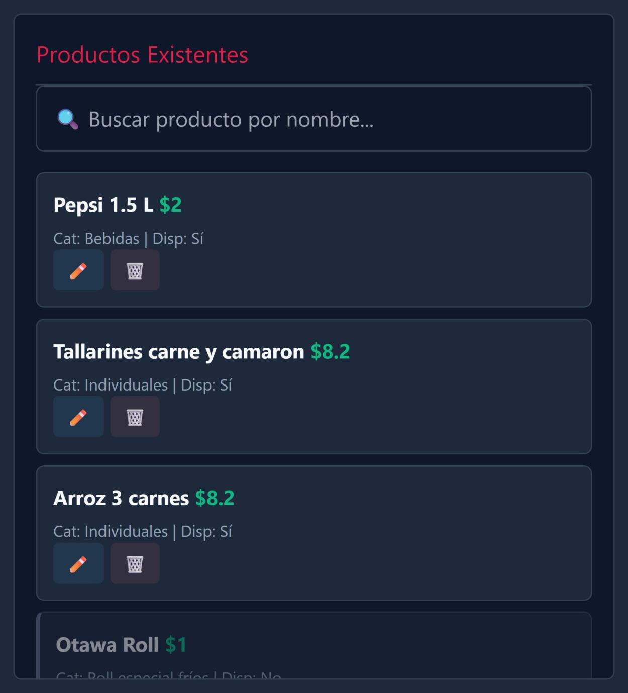
La caja 🔍 Buscar producto por nombre... filtra la lista mientras escribes. No hace falta apretar nada.
Cada fila de la lista te dice tres cosas de un vistazo:
Los platos que no están disponibles en el menú se ven más apagados que los demás — como el Otawa Roll de la imagen, que es un roll que solo existe dentro de combos.
Y los dos botones:
La papelera elimina el plato para siempre. Si además ese plato era parte de algún combo, el combo se queda cojo.
Preguntas que debes hacerte antes de tocar la papelera:
Un combo es un paquete con precio propio. Puede tener cosas fijas (10 lumpias y una Coca-Cola siempre) y cosas a elección del cliente (3 rolls que él escoge). Esta es la pestaña más complicada del panel, y por eso va explicada en pedacitos.
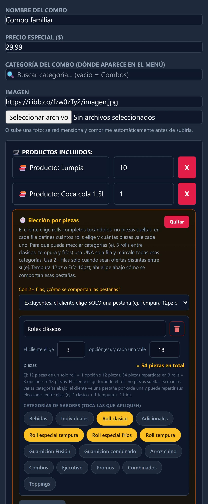
| Campo | Qué poner |
|---|---|
| Nombre del Combo | El nombre que lee el cliente. Obligatorio. |
| Precio Especial ($) | Lo que cuesta el combo entero, sin importar qué rolls elija el cliente. Obligatorio. |
| Categoría del combo | En qué grupo del menú aparece. Si lo dejas vacío, va a "Combos". |
| Imagen | Igual que en Productos. |
| Descripción del Combo | Qué trae. Vale la pena escribirla bien: es lo que convence al cliente. |
| Combo Disponible en Menú | La casilla del final. Desmárcala para esconder el combo sin borrarlo. |
No es una lista desplegable: escribes unas letras y aparecen sugerencias abajo. Tienes que hacer clic en la sugerencia. Si solo escribes el texto y no haces clic, el sistema no sabe cuál elegiste. Lo mismo pasa en el buscador de productos incluidos y en el del producto de regalo.
El combo tiene además sus propios recuadros de 📦 Empaque y ⏰ Disponibilidad programada, que funcionan exactamente igual que en los productos (7.5.6 y 7.5.7).
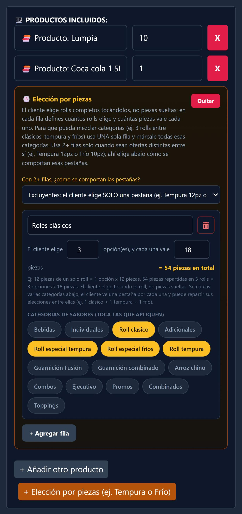
Dentro del recuadro 🛒 Productos incluidos hay dos botones, y hacen cosas muy distintas:
| Botón | Para qué |
|---|---|
| + Añadir otro producto | Agrega algo fijo, que va sí o sí. El cliente no elige nada. Ejemplo: 10 lumpias y 1 Coca-Cola 1.5 L. |
| + Elección por piezas | Agrega un bloque donde el cliente escoge. Es el recuadro naranja, y tiene su propia sección (7.6.3). |
Para agregar algo fijo:
Clic en + Añadir otro producto. Aparece una fila nueva.
Escribe unas letras del plato en la caja de la izquierda y haz clic en la sugerencia que aparece. Debe quedar escrito 🍣 Producto: Lumpia.
En la casilla del medio pon la cantidad.
La X roja de la derecha quita esa fila.
El sistema te avisa cuando escribiste algo en la caja pero no elegiste ninguna sugerencia. Si te sale ese aviso, vuelve a la fila, borra lo escrito, escribe otra vez y haz clic en la sugerencia.
Aquí es donde se define qué puede escoger el cliente. Léelo con calma, porque es la parte que más se presta a confusión.
La regla de oro: el cliente elige rolls completos tocándolos. No elige piezas sueltas, no hay sumas ni restas para él. Tú defines cuántos rolls puede tocar y cuántas piezas vale cada uno.
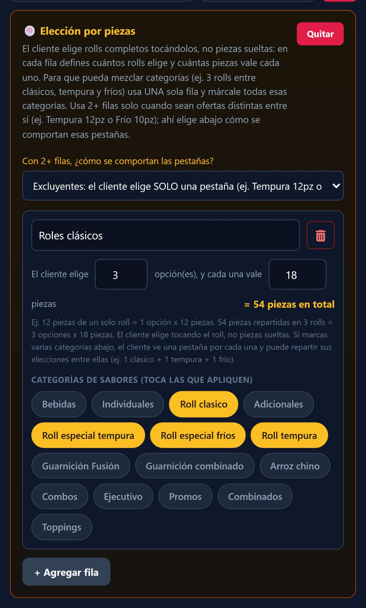
Cada fila del recuadro naranja tiene:
Ejemplos de cómo se escribe lo que quieres:
| Lo que quieres ofrecer | Cómo se escribe |
|---|---|
| 12 piezas, todas del mismo roll | 1 opción × 12 piezas |
| 24 piezas repartidas en 3 rolls | 3 opciones × 8 piezas |
| 54 piezas repartidas en 3 rolls | 3 opciones × 18 piezas |
| 2 rolls de 10 piezas cada uno | 2 opciones × 10 piezas |
Si el combo deja elegir 3 y el cliente quiere 3 tandas del mismo California roll, puede. Es un pedido legítimo, no un error.
Esta es la distinción más importante de toda la pestaña, y la que hay que entender antes de tocar un combo.
Quiere decir: "elige 3 rolls, mezclando lo que quieras de estos grupos".
El cliente ve una sola lista larga con todos los rolls de todas esas categorías juntos, y reparte sus 3 elecciones como le dé la gana: 1 clásico + 1 tempura + 1 frío, o los 3 clásicos, o lo que sea.
Así está armado el Combo familiar de la foto: una sola fila, 3 × 18 piezas, con cuatro categorías encendidas.
Quiere decir: "son ofertas distintas entre sí". Ejemplo clásico: o 12 piezas de tempura, o 10 piezas de frío. No las dos.
El cliente ve una pestaña por cada fila, y cada fila tiene su propio presupuesto de elecciones.
Si quieres "3 rolls a elección entre clásicos, tempura y fríos" y lo armas con tres filas (una por categoría), el cliente queda encerrado: solo va a poder elegir dentro de una sola categoría. Eso es una fila con tres categorías, no tres filas.
Cuando pones 2 o más filas, se activa el desplegable de arriba del recuadro: "Con 2+ filas, ¿cómo se comportan las pestañas?". Tiene dos opciones:
| Opción | Qué significa |
|---|---|
| Excluyentes | El cliente elige SOLO una de las filas. Es
Tempura 12pz o Frío 10pz. Si se cambia de pestaña,
pierde lo que había elegido en la otra. Es la opción normal. |
| Todas obligatorias | El cliente tiene que llenar todas las filas. Es 1 clásico + 1 tempura + 1 guarnición. Las pestañas ya completadas quedan con un ✔ verde. |
Si tu combo tiene una sola fila (que es lo más común), no importa qué diga ese desplegable. Solo entra en juego cuando hay dos o más.
Un detalle de cómo lo ve el cliente: aunque marques varias categorías, ahora mismo el cliente no ve botones para separarlas. Ve una sola lista larga con todo junto. Se decidió así porque los botones se leían como una restricción y confundían.
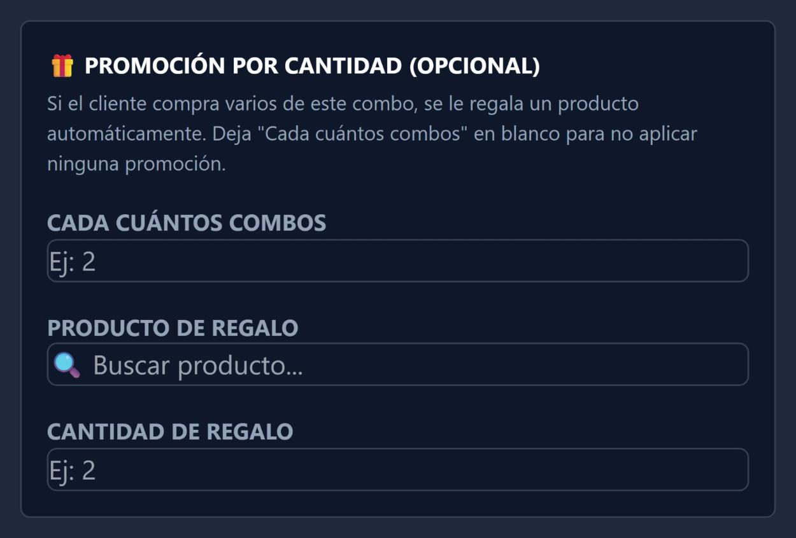
Si el cliente compra varios de este combo, se le regala un producto automáticamente. Son tres campos:
Cada cuántos combos — el número que dispara el regalo. 2 significa: cada vez que lleve 2 de este combo.
Producto de regalo — se busca escribiendo, y hay que hacer clic en la sugerencia.
Cantidad de regalo — cuántas unidades se regalan cada vez.
El regalo aparece solo en el carrito del cliente, con precio $0, y él no lo puede quitar ni cambiar. Si pide 4 combos, se le ponen 2 regalos. Si baja a 1 combo, el regalo desaparece solo.
Deja Cada cuántos combos en blanco y no se aplica ninguna promoción.
Un combo mal armado es la clase de error que descubres el sábado a las 8 de la noche. Vale la pena gastar dos minutos:
Guarda el combo.
Abre el menú del cliente en otra pestaña del navegador.
Busca el combo y ábrelo como si fueras a comprarlo.
Comprueba tres cosas: que el precio sea el correcto, que te deje elegir la cantidad de rolls que querías, y que la lista de rolls que te ofrece sea la correcta.
Si algo no cuadra, vuelve al panel. No lo dejes "para después".
Aquí se decide quién puede entrar al sistema.
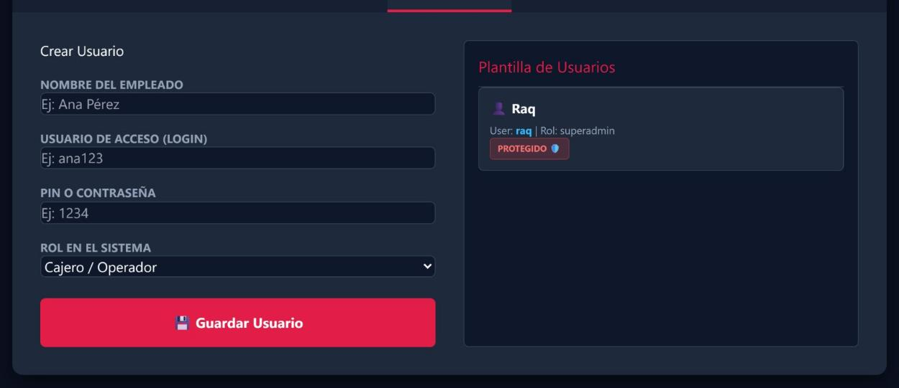
Crear un usuario nuevo:
Nombre del Empleado — el nombre de verdad de la persona. Es lo que sale arriba a la derecha en el tablero cuando esa persona entra.
Usuario de Acceso (Login) — lo que va a escribir para entrar. Corto y sin espacios: ana.
PIN o Contraseña — su clave. Al crear un usuario nuevo es obligatorio; si lo dejas vacío, el sistema te avisa y no guarda.
Rol en el sistema — ver la tabla de abajo.
💾 Guardar Usuario
| Rol | Qué puede hacer |
|---|---|
| Cajero / Operador | Entrar al tablero, mover pedidos, cobrar, tomar pedidos por teléfono. No puede entrar al panel de administración ni cambiar precios. Es el rol para el día a día. |
| Administrador | Todo lo del cajero, más el panel de administración: precios, platos, combos, horarios, usuarios. |
Lápiz ✏️ del usuario, escribe el PIN nuevo, 💾 Guardar Usuario.
Y un detalle muy útil: si editas un usuario y dejas el PIN en blanco, se queda con el que tenía. O sea que puedes corregirle el nombre a alguien sin tener que saber ni cambiar su clave.
Las cuentas de administrador aparecen en la lista con una etiqueta roja que dice PROTEGIDO 🛡️ y sin los botones de lápiz ni papelera.
Es una protección a propósito, para que nadie —ni por error ni a mala fe— pueda borrar la cuenta del dueño y dejar el sistema sin quién entre. Pero tiene una consecuencia práctica: el PIN de la cuenta del dueño no se puede cambiar desde el panel. Para eso hay que pedirle ayuda a quien mantiene el sistema.
En este momento el sistema tiene un único usuario: el del dueño, con rol de superadministrador. Eso quiere decir que todo el que trabaja entra con la misma clave.
Vale la pena crear un usuario "cajero" por cada persona. No es desconfianza: es que así, si una clave se filtra, se cambia una sola y no se paraliza el local; y en las estadísticas se puede ver quién atendió qué.
Aquí se edita el texto de los WhatsApp que el sistema manda solo. No se manda ningún mensaje desde esta pantalla: solo se escribe lo que dirán cuando llegue el momento.
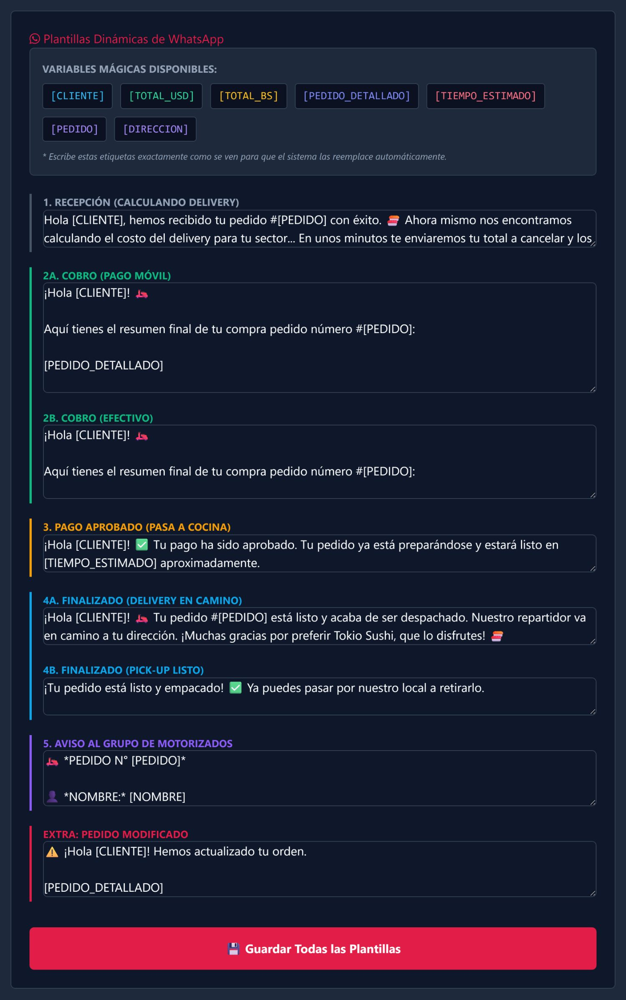
Son esas palabras entre corchetes que ves arriba de la pantalla, tipo [CLIENTE]. Funcionan como un hueco que el sistema rellena solo en el momento de mandar el mensaje.
Si escribes "Hola [CLIENTE], tu pedido #[PEDIDO] está listo", a María le llega "Hola María, tu pedido #7 está listo".
| Variable | Se convierte en |
|---|---|
| [CLIENTE] | El nombre del cliente. |
| [PEDIDO] | El número del pedido del día. |
| [PEDIDO_DETALLADO] | La lista completa de lo que pidió, plato por plato. |
| [TOTAL_USD] | El total en dólares. |
| [TOTAL_BS] | El total en bolívares, con la tasa del día. |
| [TIEMPO_ESTIMADO] | El tiempo que elegiste al aprobar el pago (ej. 25 a 30 minutos). |
| [DIRECCION] | La dirección de entrega. |
Con corchetes, en MAYÚSCULAS, sin espacios adentro y sin acentos. Si escribes [Cliente] o [ CLIENTE ], el sistema no la reconoce y al cliente le llega el mensaje con los corchetes puestos, tal cual. Queda feo y confunde.
Truco: cópialas y pégalas de la lista de arriba de la pantalla en vez de escribirlas a mano.
| Plantilla | Cuándo sale |
|---|---|
| 1. Recepción | Apenas entra el pedido, mientras se calcula el delivery. |
| 2A. Cobro (Pago Móvil) | Al pedirle el pago, si eligió pago móvil. |
| 2B. Cobro (Zelle) | Ya no se ofrece Zelle a los clientes nuevos, pero la plantilla sigue ahí por los pedidos viejos. No hace falta tocarla. |
| 2C. Cobro (Efectivo) | Al pedirle el pago, si va a pagar en efectivo. |
| 3. Pago Aprobado | Cuando aceptas el pago y el pedido pasa a cocina. Es el que lleva el tiempo estimado. |
| 4A. Finalizado (Delivery) | Cuando despachas un pedido con delivery. |
| 4B. Finalizado (Pick-Up) | Cuando el pedido para retirar está listo. |
| 5. Aviso al Grupo de Motorizados | Al grupo de repartidores, no al cliente. Ver el aviso de abajo. |
| Extra: Pedido Modificado | Cuando le cambias algo a un pedido ya hecho. |
Se editan todas las que quieras y al final se aprieta un solo botón: 💾 Guardar Todas las Plantillas. Guarda las nueve de golpe.
Ese mensaje copia, emoji por emoji, el formato que el grupo de repartidores lleva años leyendo: PEDIDO N°, NOMBRE, DIRECCIÓN, REFRESCO, BANDEJAS, CAJAS DE PIZZA, PAGO, PRECIO DEL DELIVERY.
Está hecho para leerse rápido en un celular a las 9 de la noche. Si le mueves el orden o le quitas una línea, los repartidores empiezan a equivocarse. Déjalo como está.
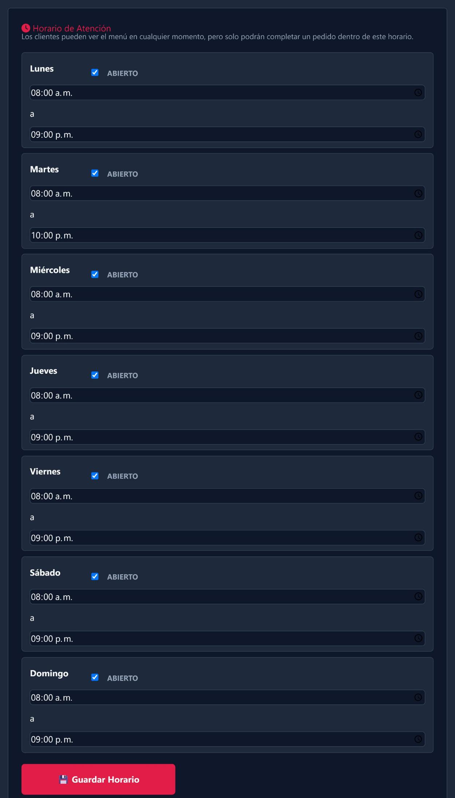
Un renglón por cada día, y cada renglón tiene tres cosas:
Al final, 💾 Guardar Horario guarda los siete días de una vez.
Qué pasa fuera del horario: el cliente sí puede entrar al menú y mirar todo. Lo que no puede es terminar el pedido: al intentar enviarlo, el sistema le dice que el local está cerrado.
Aunque el local figure cerrado, tú sí puedes registrar un pedido desde la caja. Sirve para los encargos que se toman por teléfono antes de abrir.
Desmarca Abierto en ese día, guarda, y acuérdate de volver a marcarlo la semana siguiente. El horario es fijo semana a semana: no hay calendario de fechas especiales.
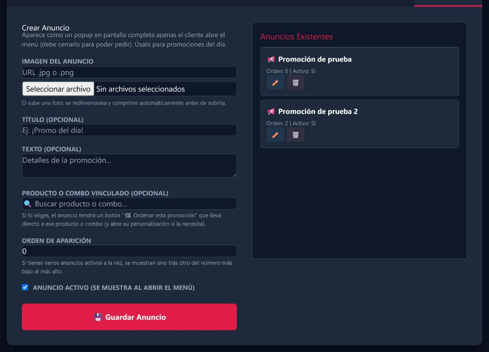
Un anuncio es un cartel a pantalla completa que le sale al cliente apenas abre el menú. Tiene que cerrarlo para poder pedir. Se usa para la promoción del día.
| Campo | Qué poner |
|---|---|
| Imagen del anuncio | La foto del cartel. Obligatorio — un anuncio es, sobre todo, una imagen. |
| Título | Opcional. Sale encima de la foto. |
| Texto | Opcional. Los detalles de la promoción. |
| Producto o combo vinculado | Opcional. Ver el aviso de abajo. |
| Orden de aparición | Si hay varios anuncios activos, salen uno tras otro del número más bajo al más alto. |
| Anuncio Activo | La casilla que decide si se muestra o no. Es tu interruptor. |
El texto de la pantalla dice que el anuncio tendrá un botón "🛒 Ordenar esta promoción". Ese botón está apagado en este momento, así que aunque llenes el campo, al cliente no le aparece. La opción se dejó lista por si se quiere volver a encender más adelante.
Cuando termine la promoción, desmarca Anuncio Activo y guarda. El anuncio se queda guardado y lo puedes volver a encender el mes que viene sin tener que subir la foto otra vez.
La lista de la derecha dice, debajo de cada anuncio, Activo: Sí o Activo: No. Vale la pena mirarla de vez en cuando: es fácil dejar encendido un anuncio de prueba o una promoción que ya se venció, y el cliente se lo come todos los días al entrar.
Pégate esto en la cabeza. Son cinco preguntas y evitan casi todos los líos:
| # | Pregunta |
|---|---|
| 1 | ¿El título del formulario dice Crear o Editar? ¿Es el que yo quería? |
| 2 | Si voy a crear algo nuevo: ¿aparece el botón ❌ Cancelar Edición? Si aparece, hago clic antes de escribir. |
| 3 | ¿Los precios están escritos con punto y no con coma? |
| 4 | Si toqué precio por paquete o elección por piezas: ¿leí la línea amarilla con el resultado y da lo que esperaba? |
| 5 | Si toqué un combo: ¿lo abrí desde el menú del cliente para comprobar que se ve bien? |
Casi todo en el panel se puede abrir para mirar sin guardar. Haz clic en el lápiz, mira cómo está configurado algo que ya funciona bien, y después haz clic en ❌ Cancelar Edición sin guardar nada.
Copiar un combo que ya funciona es mucho más seguro que inventar uno desde cero.
| Lo que ves | Qué hacer |
|---|---|
| La pantalla se ve rara, cortada o con cosas encimadas | Aprieta F5 para recargar. Resuelve la mayoría de las cosas raras. No pierdes ningún pedido. |
| No aparecen los pedidos, el tablero está vacío | Mira la fecha arriba: seguramente quedó en un día pasado. Ponla en la de hoy. |
| Un botón no hace nada al hacerle clic | Fíjate si hay una ventanita abierta por delante. Mientras haya una, el resto de la pantalla no responde. Ciérrala o confírmala. |
| El cliente dice que no le llegó el WhatsApp | Abre el pedido con la hoja 📄 y revisa el número de teléfono. Casi siempre está mal escrito. Corrígelo y escríbele tú a mano con 💬. |
| Moví un pedido sin querer a la columna siguiente | No hay forma de devolverlo. Ese paso ya mandó su WhatsApp. Escríbele al cliente explicándole, y avísale al encargado. |
| Se mandaron dos WhatsApp iguales al mismo cliente | Dos personas movieron la misma tarjeta a la vez. No se puede borrar el mensaje; discúlpate con el cliente y pónganse de acuerdo en quién mueve el tablero. |
| El total en bolívares se ve mal | Revisa la Tasa BCV arriba. Si está mal, solo un admin puede corregirla. |
| Un plato no aparece en el menú del cliente | Está marcado como agotado o como no disponible. Se revisa en la pestaña Productos del panel de administración. |
| El cliente dice que no puede hacer el pedido | Probablemente el local figura cerrado según el horario configurado. Tómale el pedido tú desde la caja, que sí puede. |
| No me deja confirmar un combo | Faltan rolls por elegir. Mira la etiqueta de la derecha (1 / 3 o Falta elegir) y completa. |
| Todo el sistema no carga | Prueba abrir cualquier otra página en el navegador. Si tampoco abre, es el internet del local, no el sistema. |
| Me equivoqué en algo grande | Avisa de una vez. Un error dicho a tiempo se arregla; uno escondido se convierte en un cliente molesto y un reclamo. |
1. En qué pantalla estabas. 2. Qué botón apretaste. 3. Qué apareció (si salió un cartel, léelo tal cual). Con eso se resuelve en un minuto.
| # | La regla |
|---|---|
| 1 | Entra siempre con tu propio usuario, y cierra sesión con el botón rojo al terminar el turno. |
| 2 | Repítele el teléfono al cliente antes de registrar el pedido. El teléfono es su identidad. |
| 3 | Léele el pedido en voz alta antes de procesarlo. |
| 4 | Verifica el pago de verdad antes de darle al Aceptar → amarillo. Una foto no es un pago. |
| 5 | Pregúntale a la cocina antes de prometer un tiempo. Ante la duda, el rango más largo. |
| 6 | Dale al Despachar ✓ azul cuando la comida sale de verdad, no antes. |
| 7 | Pregunta con cuánto paga en todos los delivery en efectivo. |
| 8 | Si editas un pedido, escríbele tú al cliente. El sistema no lo avisa solo. |
| 9 | Antes de tocar la papelera 🗑️, lee el nombre en la tarjeta. Cancelar no se deshace. |
| 10 | Si algo salió mal, dilo de una vez. Siempre es más fácil de arreglar en caliente. |
Y la regla que resume todas
El sistema no se rompe porque le hagas clic a algo.
Lo único que no se puede deshacer es cancelar un pedido y
mandar un WhatsApp.
Todo lo demás, pruébalo tranquilo.
Manual del sistema de Tokio Sushi · Septiembre de 2026
Las fotos de este manual son de la pantalla real, con pedidos inventados.
Si algo ya no coincide con lo que ves, avísale al encargado.